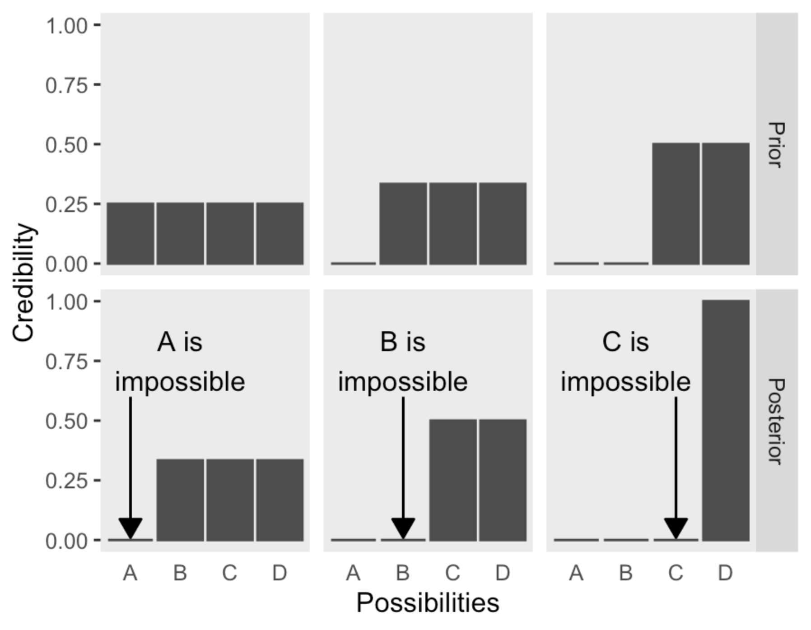
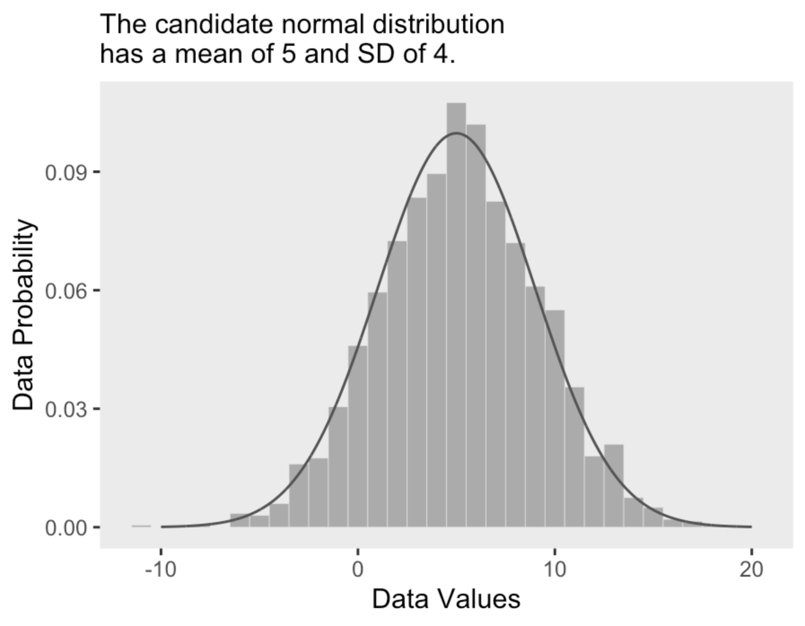
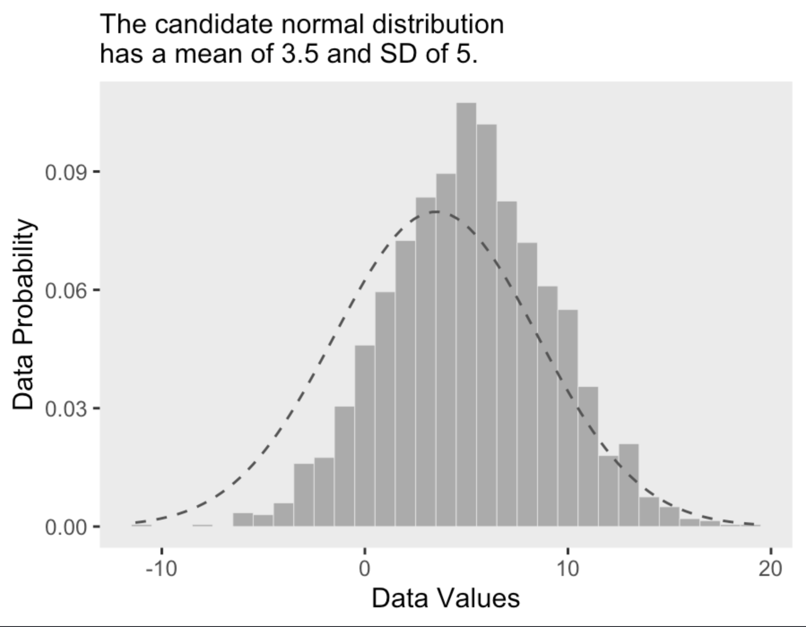
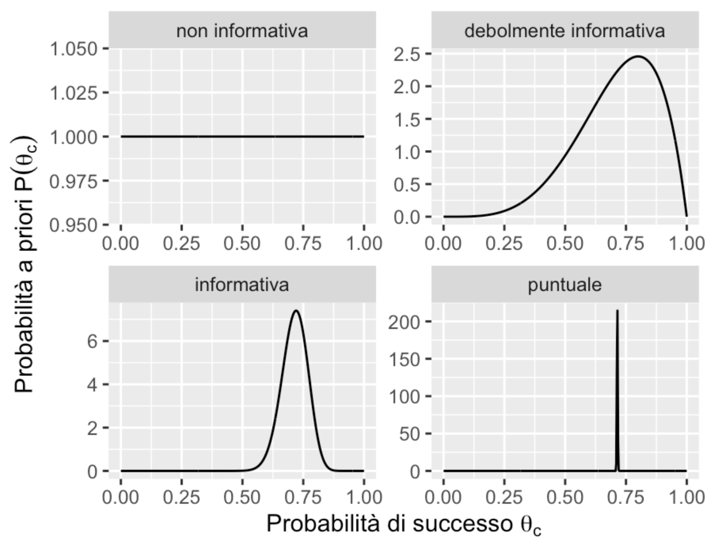

28. Credibilità, modelli e parametri#
L’obiettivo di questo Capitolo è di introdurre il quadro concettuale dell’analisi dei dati bayesiana.
28.1. Modelli generativi#
Iniziamo con un semplice esempio. Immaginiamo di incontrare un amico per strada che non ci saluta e ci chiediamo il motivo di questo comportamento. Questa è una situazione che può essere analizzata utilizzando il principio della statistica bayesiana. In questo approccio, i dati che abbiamo raccolto sono rappresentati dal fatto che il nostro amico non ci ha salutato e cerchiamo di comprendere il processo sottostante che ha generato questi dati, come il fatto che non ci ha visto o che è arrabbiato con noi.
Inoltre, un modello generativo è un modello che ipotizza che i dati che osserviamo siano generati da un processo che non possiamo vedere direttamente. Questo processo ha una componente di casualità, il che significa che non è deterministico. Quando estraiamo un campione di dati da una popolazione e stimiamo un parametro dal campione, stiamo essenzialmente cercando di scoprire il valore di una variabile che non possiamo vedere, come la media della popolazione, che attraverso il campionamento produce i dati che possiamo osservare, come la media del campione. Quindi, utilizzando le statistiche campionarie come la media campionaria e la deviazione standard stimata, vogliamo inferire i parametri del campione come la media e la deviazione standard della popolazione.
28.2. Fondamenti dell’analisi dei dati bayesiana#
In parole più semplici, la statistica bayesiana si basa su due idee fondamentali:
La prima idea riguarda la distribuzione della credibilità tra le diverse ipotesi. Inizialmente, abbiamo delle conoscenze iniziali o “a priori” su quali ipotesi potrebbero essere plausibili. Successivamente, utilizzando i dati osservati, vogliamo aggiornare le nostre credenze in modo da ridistribuire la credibilità tra le diverse ipotesi, in base a quanto sono supportate dalle evidenze.
La seconda idea è che le diverse ipotesi corrispondono ai possibili valori dei parametri di un modello statistico. In altre parole, stiamo cercando di inferire il valore dei parametri del modello che meglio descrivono il processo generativo dei dati che abbiamo osservato. In questo modo, vogliamo trovare il modello che meglio si adatta ai dati e che ci permette di fare previsioni precise.
28.2.1. Prima idea: riallocazione della credibilità#
In riferimento alla prima idea dell’inferenza bayesiana, Kruschke [Kru14] la esplica con un riferimento letterario. Nelle storie di Sherlock Holmes, il celebre detective immaginario di Sir Arthur Conan Doyle, Holmes spesso diceva al suo amico e compagno d’avventure, il dottor Watson, “Quante volte ti ho detto che quando hai eliminato l’impossibile, tutto ciò che rimane, per quanto improbabile, deve essere la verità?” (Doyle, 1890, cap. 6). Sebbene il ragionamento di Holmes, Watson o Doyle non sia mai stato formalmente descritto come un’inferenza bayesiana, in realtà lo è. In sostanza, Holmes elenca i vari sospetti iniziali di un crimine e attribuisce a ciascuno un certo grado di credibilità a priori. Successivamente, Holmes raccoglie e valuta sistematicamente le prove che escludono alcuni possibili sospetti. Se è possibile escludere tutti i possibili sospetti tranne uno, allora Sherlock Holmes conclude che il colpevole deve essere il sospetto rimanente, anche se all’inizio questa idea sembrava poco credibile.
Nel testo, Kruschke [Kru14] illustra il ragionamento “bayesiano” di Sherlock Holmes attraverso la seguente figura. Supponiamo che vi siano quattro possibili ipotesi (nella figura “Possibilities”) rispetto ad un fenomeno, che potrebbero corrispondere ai quattro sospettati di un crimine.

La prima riga mostra la credibilità a priori assegnata all’ipotesi che uno dei quattro sospettati sia il colpevole. Nella prima colonna, la credibilità a priori viene divisa equamente tra i quattro sospettati e viene assegnato il valore 1 all’intera credibilità a priori. In altre parole, se non abbiamo alcun motivo per distinguere tra i sospettati, la credibilità dell’ipotesi che uno di loro sia il colpevole è di 0.25. Se i dati disponibili ci consentono di escludere il sospettato A, allora a posteriori la credibilità viene ridistribuita tra i restanti tre sospettati come illustrato nella figura, ovvero la credibilità dell’ipotesi che uno di loro sia il colpevole sarà di 1/3.
Il processo di transizione dalla distribuzione a priori a quella a posteriori è conosciuto come “aggiornamento bayesiano”. Nella prima colonna, l’aggiornamento bayesiano, ovvero la riallocazione della credibilità sulla base dei dati a disposizione, ha permesso di escludere uno dei sospettati. Nella seconda colonna, poiché si considera a priori che il sospettato A sia impossibile, la credibilità viene distribuita equamente sui restanti tre sospettati. Se i dati consentono di escludere il sospettato B, l’aggiornamento bayesiano ci porta alla distribuzione a posteriori della credibilità che si distribuisce equamente tra C e D. In questo caso, sono stati esclusi due sospettati, ma non è possibile determinare chi sia il colpevole tra C e D. Infine, nella terza colonna, a priori è possibile escludere A e B, e i dati permettono di escludere C. Quindi, a posteriori, siamo sicuri che D sia il colpevole con una credibilità pari a 1.
La metodologia dell’analisi bayesiana prevede l’assegnazione di una distribuzione di credibilità a priori alle possibili ipotesi iniziali. Successivamente, vengono acquisite le informazioni provenienti dai dati disponibili e queste vengono utilizzate per rielaborare la distribuzione di credibilità tra le diverse ipotesi, attraverso l’aggiornamento bayesiano. In questo modo si ottiene una nuova distribuzione, definita a posteriori, che riflette la nostra conoscenza aggiornata delle ipotesi considerate, in base alle informazioni acquisite. In sintesi, l’analisi bayesiana prevede una costante rielaborazione delle credenze sulla base delle nuove informazioni disponibili, fino ad arrivare ad una distribuzione a posteriori che rappresenta il risultato finale dell’analisi.
28.2.1.1. I dati sono rumorosi e le inferenze sono probabilistiche#
Nella figura precedente, i casi considerati presuppongono che i dati siano in relazione deterministica con le possibili cause. Ad esempio, nella figura, Sherlock Holmes potrebbe aver trovato un’impronta sulla scena del crimine e identificato con certezza la taglia e il tipo di scarpa, escludendo completamente o implicando un particolare sospettato.
Nel contesto della ricerca scientifica, tuttavia, la situazione è più complessa poiché le relazioni tra i dati e le cause sottostanti sono solo probabilistiche (non deterministiche). In pratica, un investigatore potrebbe misurare l’impronta di una scarpa e i dettagli del suo battistrada, ma queste misurazioni ridurrebbero solo probabilisticamente la gamma delle scarpe possibili che potrebbero aver prodotto l’impronta. Al di fuori dei romanzi di Arthur Conan Doyle, le misurazioni non sono mai perfette e l’impronta è solo una rappresentazione imperfetta della scarpa che l’ha prodotta. La relazione tra la causa (cioè la scarpa) e l’effetto misurato (cioè l’impronta) viene complicata dalla presenza del “rumore di misura”.
Nella ricerca scientifica, i dati sono spesso influenzati da fattori estranei nonostante gli sforzi per limitarne l’impatto. Ad esempio, in uno studio sull’apprendimento della statistica da parte degli studenti di psicologia, il ricercatore potrebbe suddividere gli studenti in un gruppo sperimentale e un gruppo di controllo e misurare le loro prestazioni all’esame. Tuttavia, la prestazione di ciascun singolo studente può variare notevolmente a seconda di influenze come la motivazione, l’ansia, la preparazione pregressa e molte altre. I dati risultanti saranno estremamente rumorosi, con una grande variabilità all’interno di ciascun gruppo e una sovrapposizione tra i gruppi. Pertanto, la differenza media tra i due gruppi e quanto possiamo essere certi che vi sia una differenza possono essere inferiti solo dalle distribuzioni di voti all’esame, molto disperse e sovrapposte. Inoltre, tutte le misurazioni scientifiche includono un certo grado di “rumore”. Le tecniche di analisi dei dati sono progettate per inferire le tendenze sottostanti presenti in dati rumorosi. A differenza di Sherlock Holmes, nella ricerca scientifica i dati raccolti modificano solo incrementalmente la credibilità delle possibili tendenze suggerite dai dati. L’analisi bayesiana consente di utilizzare la teoria delle probabilità per riallocare la credibilità tra le ipotesi alla luce delle informazioni fornite dai dati, in modo non arbitrario e automatico. Durante questo corso vedremo molti esempi realistici di questo processo.
28.2.2. Seconda idea: le possibilità sono valori di parametri in un modello statistico#
Nella precedente trattazione “bayesiana” di Sherlock Holmes, le possibilità erano associate alle quattro categorie di una variabile discreta: “i sospettati del crimine” corrispondevano alle diverse categorie (A, B, C e D). Tuttavia, lavorare con variabili discrete in statistica può essere complicato. È più agevole effettuare un aggiornamento bayesiano utilizzando variabili continue e gli strumenti della teoria delle probabilità. In questo caso, le “possibilità” sono rappresentate dai valori dei parametri in un modello statistico.
Ad esempio, consideriamo una distribuzione di differenze di punteggio BDI-II prima e dopo un intervento psicologico. Se l’intervento funziona, i punteggi BDI-II diminuiranno dopo l’intervento e quindi la differenza tra prima e dopo sarà positiva. Tuttavia, l’intervento non ha gli stessi effetti su tutti i partecipanti, pertanto in uno studio osserveremo una distribuzione di punteggi (prima - dopo). Supponiamo che tale distribuzione di punteggi sia rappresentata dall’istogramma illustrato nella figura seguente.

All’istogramma è sovrapposta una distribuzione Gaussiana di parametri \(\mu\) = 5 e \(\sigma\) = 4. Questa scelta per i valori dei parametri sembra appropriata per descrivere i dati a disposizione. Qui in basso mostriamo gli stessi dati ipotetici con sovrapposta una diversa distribuzione Gaussiana, di parametri \(\mu\) = 3.5 e \(\sigma\) = 5. Anche se questa seconda distribuzione Gaussiana è plausibile, sicuramente descrive i dati in una maniera peggiore del caso precedente.

L’inferenza bayesiana è un metodo che consente di calcolare la probabilità dei parametri candidati di un modello, tenendo conto anche delle loro probabilità a priori. Questo approccio è particolarmente utile quando i valori dei parametri possono formare un continuum infinito, come nel caso del parametro \(\mu\) della distribuzione normale, che può assumere qualsiasi valore da \(-\infty\) a \(+\infty\). L’analisi bayesiana procede quindi alla riallocazione della credibilità dei valori dei parametri all’interno di uno spazio di possibilità definito dal modello statistico che è stato scelto.
Per una descrizione matematica dei dati, è importante utilizzare una forma matematica comprensibile e con parametri interpretabili, come nel caso della distribuzione normale, in cui il parametro \(\mu\) rappresenta la media e il parametro \(\sigma\) la deviazione standard. Inoltre, il modello matematico deve essere descrittivamente adeguato, ovvero deve somigliare ai dati, evitando discrepanze sistematiche tra le tendenze dei dati e la forma del modello. Tuttavia, decidere se un’apparente discrepanza sia importante o meno non è sempre facile.
È importante sottolineare che le descrizioni matematiche dei dati non sono necessariamente spiegazioni causali del fenomeno di interesse. Per comprendere le possibili cause di un fenomeno, sarebbe opportuno esprimere le possibili cause in termini di un modello matematico e poi utilizzare i dati e l’analisi bayesiana per stimare i parametri del modello e attribuire un “peso” alle possibili cause. Tuttavia, spesso la psicologia si accontenta di descrivere le differenze medie tra gruppi, senza un’indagine puntuale delle cause di tali differenze.
28.3. Modellizzazione bayesiana#
La moderna statistica bayesiana si basa principalmente sull’uso di un linguaggio di programmazione probabilistico implementato su computer, il che ha rivoluzionato il modo in cui venivano eseguite le statistiche bayesiane anche solo pochi decenni fa. L’utilizzo di questi metodi computazionali ha reso più facile la formulazione di modelli statistici complessi, riducendo la barriera delle competenze matematiche e computazionali richieste, e ha semplificato il processo di modellazione iterativa. Tuttavia, nonostante la potenza dei metodi computazionali, la statistica rimane un campo complesso e pieno di sottigliezze che richiedono una buona preparazione sugli aspetti teorici, specialmente quelli rilevanti per la pratica, per applicare efficacemente i metodi statistici.
Nell’approccio bayesiano all’inferenza statistica, si assume l’esistenza di una variabile casuale \(Y\) di cui si conosce la distribuzione a meno di un parametro \(\theta\). Per esempio, nel caso dell’esempio precedente, \(Y\) è la distribuzione delle differenze pre/post dei punteggi BDI-II, e si suppone che \(Y\) segua una distribuzione gaussiana con media \(\mu\) e deviazione standard \(\sigma\), dove \(\mu\) è un parametro incognito.
Secondo l’approccio bayesiano, si rappresenta l’incertezza sul valore del parametro ignoto \(\mu\) con una variabile casuale continua \(\Theta\), che ha come supporto l’insieme dei valori ammissibili per il parametro. La funzione di densità di probabilità \(p(\theta)\), chiamata distribuzione a priori, rappresenta la sintesi delle opinioni e delle informazioni che si hanno sul parametro prima dell’osservazione dei dati. Ad esempio, nel caso dell’esempio considerato, si potrebbe descrivere l’incertezza su \(\mu\) mediante una funzione di densità la cui massa è compresa nell’intervallo \([-20, 20]\) e media pari a zero, rappresentata da una distribuzione normale \(\mathcal{N}(0,7)\).
L’aggiornamento dell’incertezza su \(\theta\) avviene con l’osservazione dei risultati di un esperimento casuale, ovvero dall’evidenza \(y\) proveniente da un campione osservato di dimensione \(n\). Le informazioni provenienti dal campione osservato \(y = (y_1, \dots, y_n)\) sono contenute nella funzione di verosimiglianza \(p(y \mid \theta)\), che rappresenta la probabilità di osservare i dati del campione dato il valore del parametro \(\theta\). Nel caso dell’esempio in discussione, la funzione di verosimiglianza potrebbe essere una distribuzione normale con media \(\mu\) e deviazione standard \(\sigma\), dove \(\sigma\) è noto e \(n\) è la dimensione del campione.
Dopo aver osservato l’evidenza empirica \(y\), l’aggiornamento delle conoscenze a priori contenute nella distribuzione iniziale \(p(\theta)\) avviene utilizzando il teorema di Bayes. La distribuzione a posteriori \(p(\theta \mid y)\) è proporzionale al prodotto della probabilità a priori e della verosimiglianza, ed è chiamata distribuzione a posteriori:
La distribuzione a posteriori del parametro \(\mu\) nell’esempio in questione descrive la nostra incertezza sulla media dell’efficacia dell’intervento psicologico, basata sui dati empirici e sulle nostre conoscenze pregresse rappresentate dalla distribuzione a priori. Se la maggior parte della massa della distribuzione a posteriori si concentra su valori positivi, ciò fornisce un’indicazione che l’intervento psicologico sia stato efficace in media (cioè ha portato a una riduzione dei punteggi BDI-II). Se invece la massa della distribuzione a posteriori del parametro \(\mu\) è distribuita in modo bilanciato tra valori negativi e positivi, allora non ci sono prove sufficienti per affermare l’efficacia dell’intervento psicologico, in quanto alcuni pazienti potrebbero aver beneficiato dell’intervento, mentre altri no.
In sintesi, la distribuzione a posteriori del parametro \(\mu\) rappresenta la credibilità che possiamo attribuire all’efficacia dell’intervento psicologico sulla base dei dati disponibili, insieme alle nostre conoscenze pregresse.
28.4. Flusso di lavoro bayesiano#
Secondo Martin et al. [MKL22], il processo di modellazione bayesiana si compone di tre fasi.
Si costruisce un modello statistico che combina e trasforma variabili casuali, basandosi sui dati disponibili e sulle ipotesi sul modo in cui questi dati sono stati generati.
Si utilizza il teorema di Bayes per aggiornare le nostre conoscenze, condizionando il modello ai dati e ottenendo una distribuzione a posteriori.
Si verifica se il modello ha senso, confrontandolo con diversi criteri tra cui i dati stessi e la conoscenza del dominio. Siccome spesso non si è certi del modello, si possono confrontare diverse alternative.
Questi tre passaggi vengono eseguiti in modo iterativo, costituendo quello che viene definito “flusso di lavoro bayesiano” (bayesian workflow).
Esaminiamo ora più nei dettagli le varie fasi del flusso di lavoro bayesiano.
28.4.1. Notazione#
Per fissare la notazione, nel seguito \(y\) rappresenterà i dati e \(\theta\) rappresenterà i parametri incogniti di un modello statistico. Sia \(y\) che \(\theta\) vengono concepiti come variabili casuali. Con \(x\) vengono invece denotate le quantità note, come ad esempio i predittori del modello lineare. Per rappresentare in un modo conciso i modelli probabilistici viene usata una notazione particolare. Ad esempio, invece di scrivere \(p(\theta) = Beta(1, 1)\) scriviamo \(\theta \sim Beta(1, 1)\). Il simbolo “\(\sim\)” viene spesso letto “è distribuito come”. Possiamo anche pensare che significhi che \(\theta\) costituisce un campione casuale estratto dalla distribuzione Beta(1, 1). Allo stesso modo, ad esempio, la verosimiglianza del modello binomiale può essere scritta come \(y \sim \text{Bin}(n, \theta)\).
28.4.2. Distribuzioni a priori#
In un approccio bayesiano, i parametri della distribuzione di riferimento non sono considerati costanti incognite, ma piuttosto variabili casuali, e perciò sono descritti da una distribuzione di probabilità a priori. La scelta della distribuzione a priori dipende dalle informazioni disponibili e si cerca di assegnare una probabilità maggiore ai valori del parametro che sono considerati più plausibili. Idealmente, le credenze a priori che portano alla scelta della distribuzione a priori dovrebbero essere supportate da una qualche motivazione, come ad esempio i risultati di ricerche precedenti.
28.4.2.1. Tipologie di distribuzioni a priori#
Possiamo distinguere tra diverse distribuzioni a priori in base a quanto fortemente impegnano il ricercatore a ritenere come credibile un particolare intervallo di valori dei parametri. Un caso estremo è quello che rivela una totale assenza di conoscenze a priori, il che conduce alle distribuzioni a priori non informative, ovvero quelle che assegnano lo stesso livello di credibilità a tutti i valori dei parametri. Le distribuzioni a priori informative, d’altra parte, possono essere debolmente informative o fortemente informative, a seconda del modo in cui lo sperimentatore distribuisce la credibilità nello spazio del parametro. Un caso estremo di credenza a priori è quello che assegna tutta la credibilità ad un singolo valore del parametro. La figura seguente mostra alcuni esempi di distribuzioni a priori per il modello Binomiale:
distribuzione non informativa: \(\theta_c \sim Beta(1,1)\);
distribuzione debolmente informativa: \(\theta_c \sim Beta(5,2)\);
distribuzione fortemente informativa: \(\theta_c \sim Beta(50,20)\);
valore puntuale: \(\theta_c \sim Beta(\alpha, \beta)\) con \(\alpha, \beta \rightarrow \infty\) e \(\frac{\alpha}{\beta} = \frac{5}{2}\).

28.4.2.2. Selezione della distribuzione a priori#
La selezione delle distribuzioni a priori è stata spesso vista come una delle scelte più importanti che un ricercatore fa quando implementa un modello bayesiano in quanto può avere un impatto sostanziale sui risultati finali. La soggettività delle distribuzioni a priori è evidenziata dai critici come un potenziale svantaggio dei metodi bayesiani. A questa critica, van de Schoot et al. [vdSDK+21] rispondono dicendo che le distribuzioni a priori svolgono due importanti ruoli statistici: quello della “regolarizzazione della stima”, ovvero, il processo che porta ad indebolire l’influenza indebita di osservazioni estreme, e quello del miglioramento dell’efficenza della stima, ovvero, la facilitazione dei processi di calcolo numerico di stima della distribuzione a posteriori. L’effetto della distribuzione a priori sulla distribuzione a posteriori verrà discusso in dettaglio nel Capitolo L’influenza della distribuzione a priori. Inoltre, van de Schoot et al. [vdSDK+21] notano che, a proposito di scelte “soggettive”, al di là della scelta delle distribuzioni a priori, ci sono molti elementi del processo di inferenza statistica che risultano sicuramente “soggettivi” (cioè, arbitrari), in particolare la scelta del modello statistico e le ipotesi sulla distribuzione degli errori. Risultano inoltre “soggettivi” il modo di operazionalizzare la variabile dipendente, il tipo di confronti da esaminare e tante altre dimensioni dell’inferenza statistica. Per cui, il confronto tra statistica bayesiana e frequentista non può essere sicuramente svolto nei termini delle dimensioni oggettivo/soggettivo.
28.4.3. La funzione di verosimiglianza#
La funzione di verosimiglianza per due casi tipici, quello binomiale e quello Normale, è stata descritta nel capitolo La verosimiglianza.
Seguendo una pratica comune, all’interno di un framework bayesiano spesso useremo la notazione \(p(\cdot)\) per rappresentare due quantità differenti, ovvero la funzione di verosimiglianza e la distribuzione a priori. Questo piccolo abuso di notazione riflette il seguente punto di vista: anche se la verosimiglianza non è una funzione di densità di probabilità, noi non vogliamo stressare questo aspetto, ma vogliamo piuttosto pensare alla verosimiglianza e alla distribuzione a priori come a due elementi che sono egualmente necessari per calcolare la distribuzione a posteriori. In altri termini, per così dire, questa notazione assegna lo stesso status epistemico alle due diverse quantità che si trovano al numeratore della regola di Bayes.
28.4.4. La verosimiglianza marginale#
Per il calcolo di \(p(\theta \mid y)\) è necessario dividere il prodotto tra la distribuzione a priori e la verosimiglianza per una costante di normalizzazione. Tale costante di normalizzazione, detta verosimiglianza marginale, ha lo scopo di fare in modo che \(p(\theta \mid y)\) abbia area unitaria.
Si noti che la verosimiglianza marginale (ovvero, l’integrale al denominatore della eq. (28.1) è spesso di difficile risoluzione analitica per cui l’inferenza bayesiana solitamente procede attraverso metodi di ricampionamento e metodi iterativi, quali le Catene di Markov Monte Carlo (MCMC).
28.4.5. La distribuzione a posteriori#
La distribuzione a postreriori si trova applicando il teorema di Bayes:
Nei Capitoli successivi vedremo come calcolare la distribuzione a posteriori. Ci sono due metodi:
un metodo esatto, che può essere usato nel caso delle distribuzioni a priori coniugate;
un metodo approssimato, che può sempre essere usato, ma è computazionalmente intensivo.
28.4.6. Distribuzione predittiva a priori#
La distribuzione a posteriori è l’oggetto centrale nella statistica bayesiana, ma non è l’unico. Oltre a fare inferenze sui valori dei parametri, potremmo voler fare inferenza sui dati. Questo può essere fatto calcolando la distribuzione predittiva a priori:
La (28.2) descrive la distribuzione prevista dei dati in base al modello (che include la distribuzione a priori e la verosimiglianza), ovvero descrive i dati \(y^*\) che ci aspettiamo di osservare, dato il modello, prima di avere osservato i dati del campione.
La distribuzione predittiva a priori è una distribuzione di (densità) di probabilità. È possibile utilizzare campioni dalla distribuzione predittiva a priori per valutare e calibrare i modelli utilizzando le nostre conoscenze dominio-specifiche. Ad esempio, ci possiamo chiedere: “È sensato che un modello dell’altezza umana preveda che un essere umano sia alto -1.5 metri?”. Già prima di misurare una singola persona, possiamo renderci conto dell’assurdità di questa domanda. Se la distribuzione prevista dei dati consente domande di questo tipo (ovvero, prevede di osservare dati che risultano insensati alla luce delle nostre conoscenze dominio-specifiche), è chiaro che il modello deve essere riformulato.
28.4.7. Distribuzione predittiva a posteriori#
Un’altra quantità utile da calcolare è la distribuzione predittiva a posteriori:
Questa è la distribuzione dei dati attesi futuri \(\tilde{y}\) alla luce della distribuzione a posteriori \(p(\theta \mid y)\), che a sua volta è una conseguenza del modello adottato (distribuzione a priori e verosimiglianza) e dei dati osservati. In altre parole, questi sono i dati che il modello si aspetta dopo aver osservato i dati de campione. Dall’eq. (28.3) possiamo vedere che le previsioni sui dati attesi futuri sono calcolate integrando (o marginalizzando) sulla distribuzione a posteriori dei parametri. Di conseguenza, le previsioni calcolate in questo modo incorporano l’incertezza relativa alla stima dei parametri del modello.
28.5. Commenti e considerazioni finali#
Secondo l’approccio bayesiano, anziché considerare il parametro di interesse di un modello statistico come un valore vero ma sconosciuto, si assegna prima dell’esperimento una distribuzione di probabilità, chiamata stato di credenza, al vero valore del parametro. Questa distribuzione a priori può essere conosciuta, come nel caso della distribuzione normale con media 100 e deviazione standard 15 per i punteggi del QI, oppure può essere arbitraria. Successivamente, si raccolgono dei dati e si calcola la probabilità dei possibili valori del parametro in base ai dati osservati e alle credenze a priori. La nuova distribuzione di probabilità ottenuta è chiamata “distribuzione a posteriori” e rappresenta l’incertezza dell’inferenza. Questo Capitolo ha brevemente descritto i concetti fondamentali dell’inferenza statistica bayesiana.